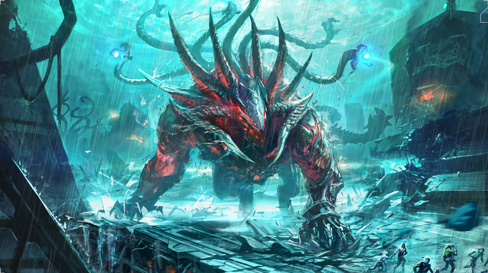
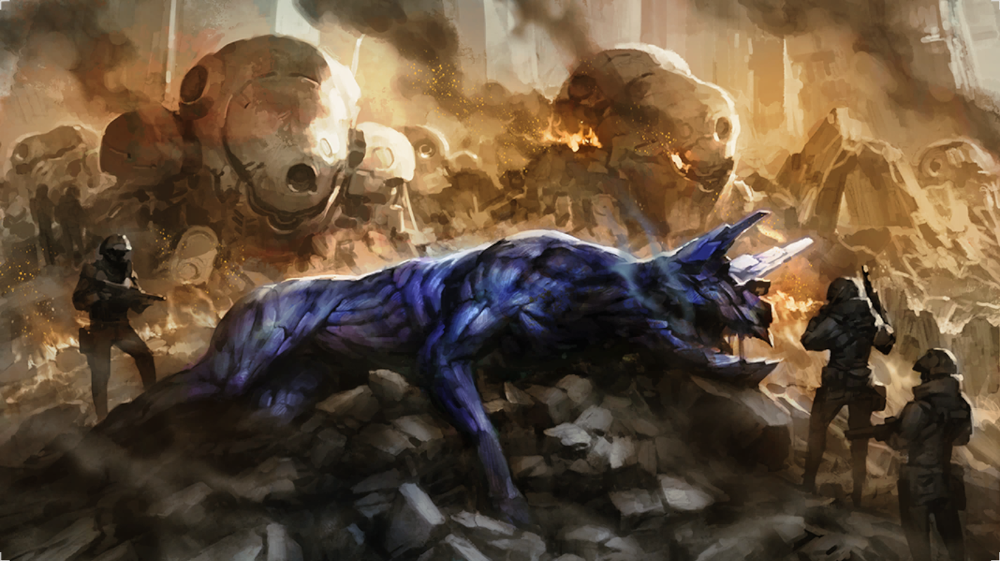
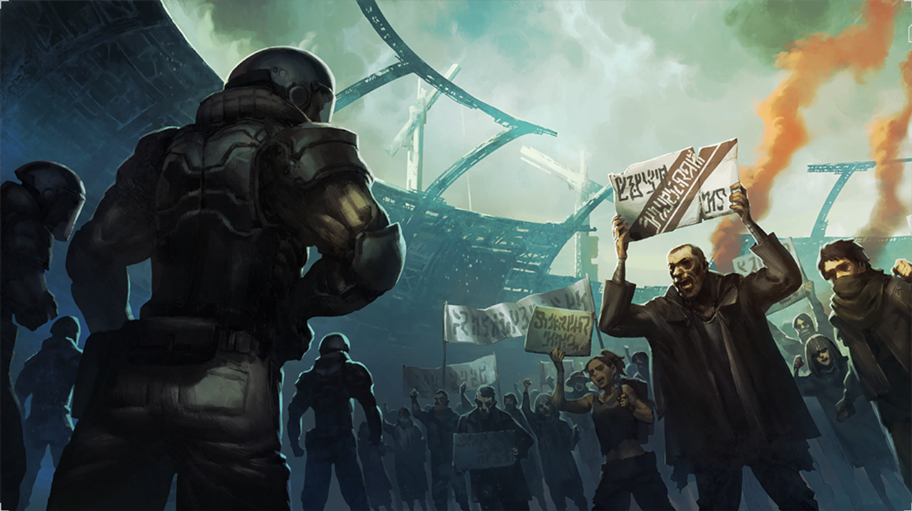
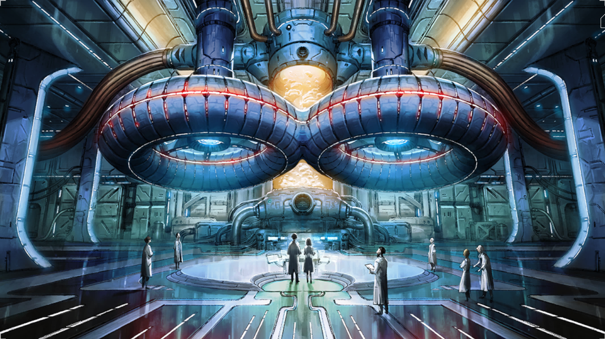
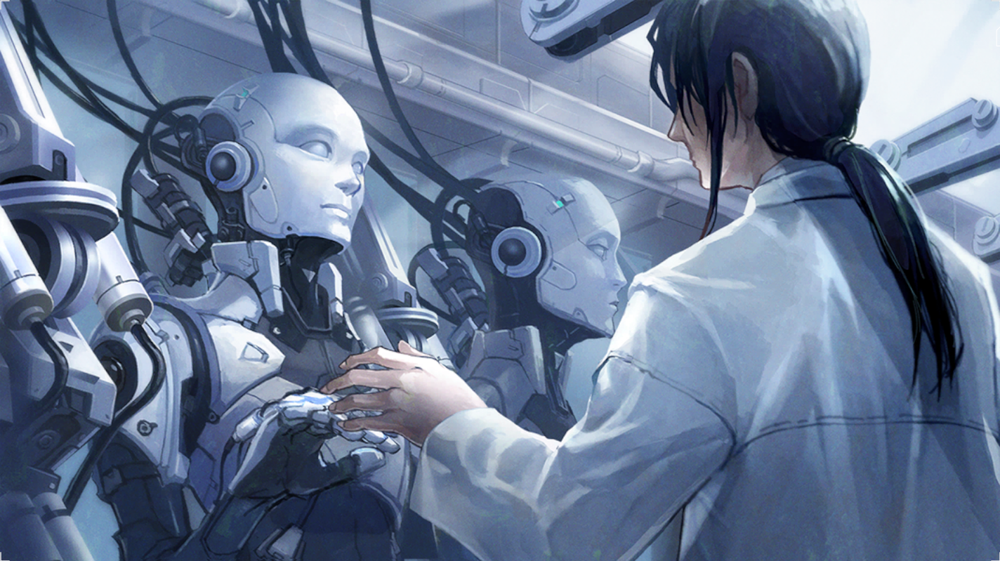

123 years after the Tears of the New Moon, Blueschist Density suddenly and unexpectedly spiked in the lowest level of Amasia. The Great Shield collapsed immediately afterward, along with the foundations of Amasia itself. In the pandemonium that followed, many people were swallowed up by something consisting of Blueschist, and less than half of the population were able to escape. This collapse nearly wiped out the heads of the Amasian government, making subsequent relief efforts and further investigation into the cause of this phenomenon difficult to execute.

An Ender Is Discovered
An Ender is discovered
AD: [Manual Entry]
The people realized during this period that, for one reason or another, the blue rain would only affect humans. Animals and vegetation continued to thrive under the rain, in regions now devoid of human life. One day, humans foraging in the early afternoon came under assault by a gigantic creature. Fleeing in fear, one forager recalled its appearance clearly: the sharp fangs, rending claws and bluish-black body. This would come to be Known as an Ender"one that ended the world, whose existence heralded Armageddon itself. And thus, the surface world was no longer safe in any weather.

An Ender Is Repelled For The First Time
An Ender is repelled for the first time
AD: [Manual Entry]
Finally, after losing many lives in the process, humanity eventually succeeded in repelling a small Ender. Enders cores were discovered to be weak points, allowing the development of Cradles with weapons effective against them. Ender-related damage and injuries dropped significantly, and the scope of exploration expanded further into the outside world. This would lead to encounters with even more powerful Enders; nevertheless, it was an important step for humanity.

Announcement Of Governmental Policy Post-Establishment Of Amasia
Announcement of governmental policy post- establishment of Amasia
AD: [Manual Entry]
Once the Enders dwelling in the vertical shaft were defeated and construction on the Great Shield had started, the governmental policy for the period after establishment of the city was announced. While it expressed hope for the development of the city and humanity, it also announced a strict set of guidelines for becoming a resident, leading a minority of those on the surface who had been friendly toward the project to now turn against it. Certain items were objected to most strongly: Management of the population with birth control and the Terminal Union Obligation to suppress emotions using E-Supplements Division of living area based on profession Most of those who turned against the administration departed the plan and returned to their original settlements, but this also served to intensify the labor movement while radicalizing a small segment of the rebels, turning them into guerillas. This can be considered one of the primary factors in the delay of the construction of Amasia.
Related Artifact | Terminal Union Matrix Diagram
Completion Of Blueschist Shield Technology
Completion of Blueschist Shield Technology
AD: [Manual Entry]
The AO Waves emitted by AO Crystals could pass through almost all matter and would attract Enders, meaning research into shutting AO Waves out had always been a priority. It was during this year that reflective optical paint was finally developed, capable of deflecting 99.997% of AO Waves once hardened. This made interior storage of AO far easier, while also allowing for the installation of AO engines in Cradles.
Related Artifact | Shield Paint Can
Development Of E-Supplements
Development of E- Supplements
AD: [Manual Entry]
Scientific research had been proceeding apace, still far behind enjoyed prior to the fall of civilization, but greatly aided by the fortuitous discovery of remnants of old computers. _ lt Was during this year that one of the products of this, Al created specifically for research purposes, produced the chemical blueprint for E-Supplements. These were initially stated as being just to help people get through the hard times prior to the completion of Amasia. Trials were conducted on volunteer researchers and criminals, and,after an apparent lack of severe side effects was confirmed, they were then mainly prescribed to the construction workers.
Related Artifact | Metal Supplement Case
Ernesto Morado Becomes President Of Amasia
Ernesto Morado becomes president of Amasia
AD: [Manual Entry]
Ernesto Morado was elected the president of Amasia. An intense apathy toward government matters was shared among all strata of Amasian citizenry. Even so, the office of the president carries much authority. Ernesto bested the Anti-Amasia Organization opposition in every facet of his campaign. At the same time, he doubled financial contributions to the organization, fanning the flames of hostility. All for the sake of Ernestos ultimate goal...
Related Artifact | R statue
Evacuation To Underground Facilities Begins
Evacuation to underground facilities begins
AD: [Manual Entry]
Miraculously avoiding the floods after the Tears of the New Moon, as well as the resulting Mosaic Disease, survivors slowly began to gather at facilities in each region. Most of these facilities had limited resources, however, and the resulting scramble for food led to a number of tragic incidents. At the same time, a lucky few groups managed to arrive at operable vegetation production plants, allowing them to become self- sufficient.
Related Artifact | Harvesting Arm

Experimental Ao Crystal Melting Furnace Completed
Experimental AO Crystal melting furnace completed
AD: [Manual Entry]
A joint venture between the surface and former Amasia researchers led to the development of technology that melts fragmented AO Crystals in a high-temperature, high-pressure environment to extract energy. This would allow the use of AO Crystals even without the high-performance Amasian Magus. Even so, the sheer size and intricate structure of the AO Crystal melting furnace meant that it could only be utilized at surface settlement Nests of a certain scale.
Related Artifact | Mockup
Exploration Of The Outside World Begins
Exploration of the outside world begins
AD: [Manual Entry]
Even in evacuation zones and places blessed with rainfall, stores of water and food were scarce. Only scant amounts of spring water were drinkable, as consuming the rain itself was totally out of the question. Despite fear of the blue rain, people were compelled to venture into the outside world for sustenance. As far as they could see from indoors, the blue rain that had been lethal to humans seemed to have no effect on the flora and fauna. Without a weather forecast system, groups would manufacture hermetically-sealed wheeled vehicles from the relative safety of the shelters, in the hopes of protecting themselves from the rapidly increasing spells of heavy rainfall.
Related Artifact | Tank Parts
First Magus Lot Completed
First Magus lot completed
AD: [Manual Entry]
An initial lot of two Magus were completed and sent into trial operation. Development also finished on the CRADLECOFFINs, and pilot training commenced between man and machine human and Magus. Two Magus and two CRADLECOFFINs were created in this lot. The Magus themselves demonstrated humanlike emotions far beyond those observed in the prototype, and garnered high expectations as the future friends of humanity. Despite very brief contact with individuals outside of combat training, they were able to deepen engagement with several humans. Even so, such output was nothing but the result of quantum calculation. Their quantum computers had undergone compulsory miniaturization in the initial lot, putting a tremendous strain on the Magus bodies that resulted in malfunctions in an extremely short period of time. They were deemed impossible to repair, and stored away for safekeeping.
Historical Compilation Team Established
Historical compilation team established
AD: [Manual Entry]
Ten years after the collapse of Amasia The former citizens of Old Amasia have completed their relocation to the surface. Those who were settled into their Nests were provided with the opportunity to reflect upon the past. At the behest of the Amasian Nest Organization, the "Historical Compilation Society" initiative was founded. The society's stated mission was to collect what little remained after Amasia's collapseCCTV footage, documents, etc.so that the historical legacy of Amasia would not be buried under the rubble as well. Every creed of Drifter, no matter their spotted past or criminal record, was welcome to join the effort, and their efforts were well compensated. Any recovered material was collected and organized at the headquarters for the Historical Compilation Society, and thorough analyses were conducted in order to shed light upon long-lost truths.
Related Artifact | Terminal
Mass Production Of General-Purpose Magus
Mass production of general- purpose Magus
AD: [Manual Entry]
Some new surface bases proceeded to industrialize, and succeeded in the mass production of general-purpose Magus. The human-like elements that manifested in prior Magus models such as psychological singularitywere not prioritized; instead, internal and external durability were emphasized, in order to reduce the need for maintenance. This turned them into beings far removed from humans, in both mind and body. As a result, there was deep-seated criticism of the general-purpose Magus, since they lacked the friends of humanity" aspect present in the first several Magus lots. Even so, some extolled their virtues as the perfect partners, specifically due to this disparity from humans. The matter is still up for debate to this very day.
Related Artifact | GeneralPurpose Magus Schematic Data Media
Publication Of Thesis On Raintight
Publication of thesis on Raintight
AD: [Manual Entry]
A thesis predicting the existence in human blood of a substance called Raintight, capable of resisting Blueschist, was published on the Amasia Research Information Network. It was posted by Dothan, who was just 16 at the time. The thesis was quickly and decisively dismissed by the scientific community as delusional nonsense, with Dothan opening himself up to harsh and ongoing criticism.
Related Artifact | Theses
Raintight Serum Completed
Raintight serum completed
AD: [Manual Entry]
After the collapse of Amasia, the Raintight serum was created by a medical research team led by Dr. Dothan Kuze and then distributed by the government. Wide-scale production began immediately in a former Amasian research facility on the surface. Administration of the serum began at several sites, and people lined up in droves at each location in the hopes of getting an early dose. Moreover, the personal data of the gene's provider is still completely unknown.
Related Artifact | Injection Sticker

Research Begins On Androids And Personality-driven Al
Research begins on androids and personality-driven Al
AD: [Manual Entry]
Five years since the founding of the city, and the citizens of Amasia Were overflowing with creativity, even developing products and technology that didn't exist at the end of the 21st century. Or maybe they were just lonely. This was the period when work began on autonomous androids, intended for such purposes as cleaning and cooking. The Al used internally in these androids and the organic materials used for their exterior appearance rapidly came to mimic humans, almost as though seeking to create the friends of humanity."
Start Of Full Immigration To Amasia
Start of full immigration to Amasia
AD: [Manual Entry]
With the completion of the Great Shield, a base for Drifters was also established inside the vertical shaft and the surrounding region was quickly stabilized. Dorms for the construction workers were also created inside the shaft and subsequent work proceeded quickly. When around 80% of the construction work on the Amasia residential districts had been completed, immigration to the new city began in earnest.
Stricter New Administrative Policy
Stricter new administrative policy
AD: [Manual Entry]
The use of AO energy now had to be controlled, and the Amasian government announced a new policy to that effect. Occupations providing important services were given energy priority, supplies of materials were curtailed, and harsh population control measures were placed on the residents within Amasia. Many of those pushed too far by these changes abandoned the government's system and set up slums in the lowest level of Amasia. Others chose to return to a life on the surface.
The Drifters Are-established
The Drifters are-established
AD: [Manual Entry]
Those exploring the outside world while fending off Enders had become essential for gathering resources and information from their surroundings, and were thus highly valued in several sheltered regions. The people would start calling them "Drifters"a term of respect for these valiant vagabonds willing and able to explore long distances. The first Drifters faced overwhelming danger due to the thin plating and lack of Magus support in their Cradles; the chances of them returning safely were below 70%.
Related Artifact | Early Cradle Part
The Tears Of The New Moon Occurs
The Tears of the New Moon occurs
AD: [Manual Entry]
2099, the evening of a new moon... An intense storm began brewing in a vast area centered around the Mediterranean Sea. Heavy rain also began falling on inland areas that had seen little rain up to that pointincluding the area where Amasia would eventually be built. Over the next two days, the rain continued to spread and churn; the people looked to the skies with unease, shielding their eyes from the downpour. Before long, the rain turned blue, and those who touched this tainted deluge met an ignoble end. The floods spread across the world faster than the warnings could, wiping out 92% of the population in the first week. Most information regarding the final throes of this world has been lost. G a % 8 6 ~
The Yoshio Boom
The Yoshio Boom
AD: [Manual Entry]
> After the educational show Yoshio was unceremoniously cancelled years prior, businesses were left with excess inventory of stuffed toys of the protagonist. Subsequently, the toys were distributed to childrens institutions and slums for free. Worn from the rough handling of children and attempts to patch them up, they were discovered by a designer who turned them into illustrations and posted them on Amasias local online network. Cute despite its unsettling appearance, its unstable character, and its sorrowful air, the new mascot was a particular hit with downtrodden young women and became the subject of unauthorized merchandise.
Related Artifact | y Stuffed Toy u
Use Of Ao Crystal To Produce Energy Becomes Possible
Use of AO Crystal to produce energy becomes possible
AD: [Manual Entry]
. Drifters often reported seeing Enders in close proximity to AO Crystals, and it was determined that the Enders absorb some kind of energy from the crystals. This discovery launched research projects aiming to harness that energy. A few years later, the technology was created to turn these AO Waves emitted by the crystals into electrical energy. This led to a full- scale operation to harvest as many AO Crystals as possible, as a new source of energy. This in turn had the effect of preventing massive AO Crystals from forming, and of preventing the formation of the Giga Structures that form around them.